7 Nights / 8 Days
Airport → Hikkaduwa → Unawatuna → Yala → Ella → Nuwara Eliya → Sigiriya → Negombo → Colombo → Airport
EXPLORE7 NIGHTS / 8 DAYS
Airport – Hikkaduwa – Unawatuna – Yala – Ella – Nuwara Eliya – Kandy – Sigiriya – Negombo – Airport
Day 01 – Airport – Hikkaduwa
Welcome to Sri Lanka! After arrival, proceed to the southern coastal town of Hikkaduwa, known for its vibrant coral reefs and beautiful beaches.
Hikkaduwa Beach
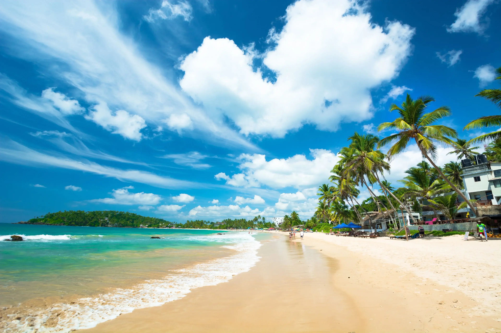
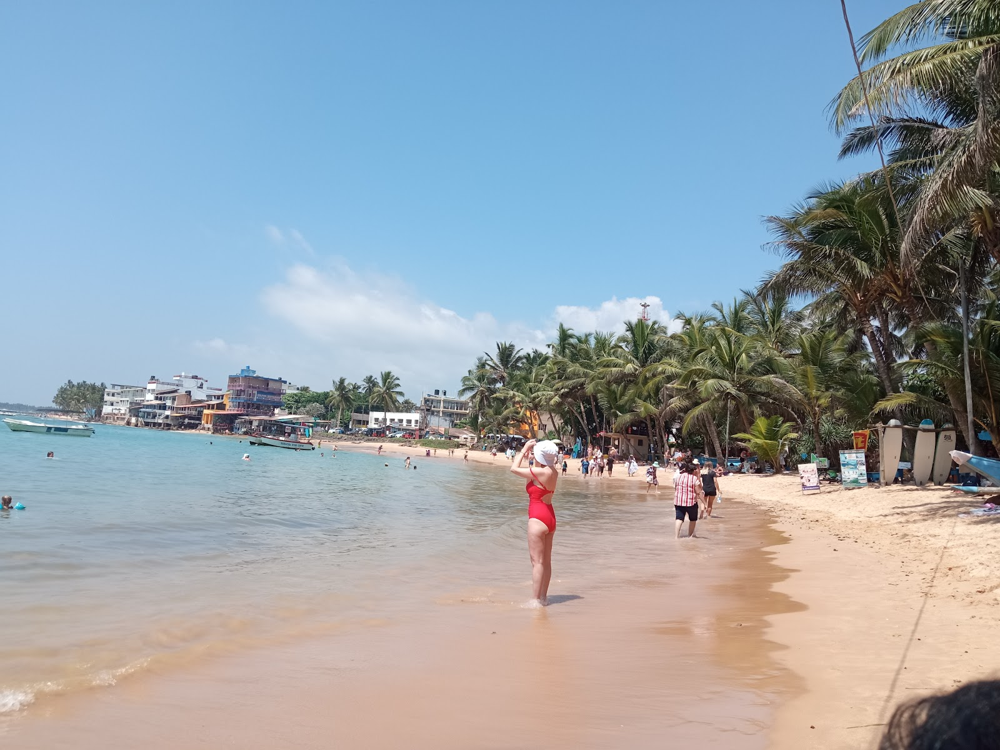
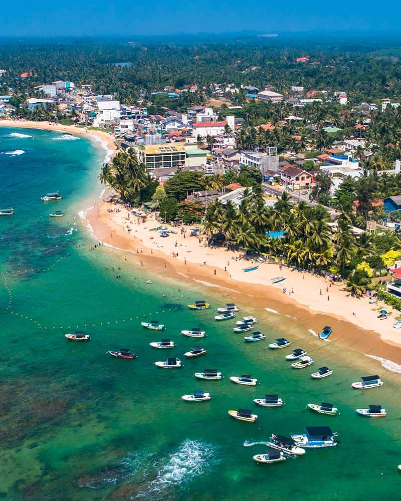
Hikkaduwa Having a big sale, on-site celebrity, or other events? Be sure to announce it so everybody knows and gets excited about it. Hikkaduwa is a seaside resort town in southwestern Sri Lanka. It’s known for its strong surf and beaches, including palm-dotted Hikkaduwa Beach, lined with restaurants and bars. The shallow waters opposite Hikkaduwa Beach shelter the Hikkaduwa National Park, which is a coral sanctuary and home to marine turtles and exotic fish. Inland, Gangarama Maha Vihara is a Buddhist temple decorated with hand-painted murals.
Day 02 – Unawatuna – Galle
Explore the nearby beach of Unawatuna and the historic city of Galle, home to a UNESCO World Heritage Dutch Fort.
Galle Fort & Unawatuna
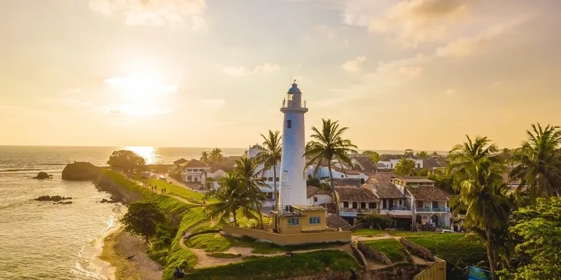
Galle is a town situated on the southwestern tip of Sri Lanka, 119 km (74 mi) from Colombo. Galle was known as Gimhathiththa (although Ibn Batuta in the 14th century refers to it as Qali) before the arrival of the Portuguese in the 16th century when it was the main port on the island. Galle reached the height of its development in the 18th century, before the arrival of the British, who developed the harbor at Colombo.
Day 03 – Yala Safari
Drive towards Yala for an exciting afternoon jeep safari in one of the world's best places to spot leopards.
Yala National Park
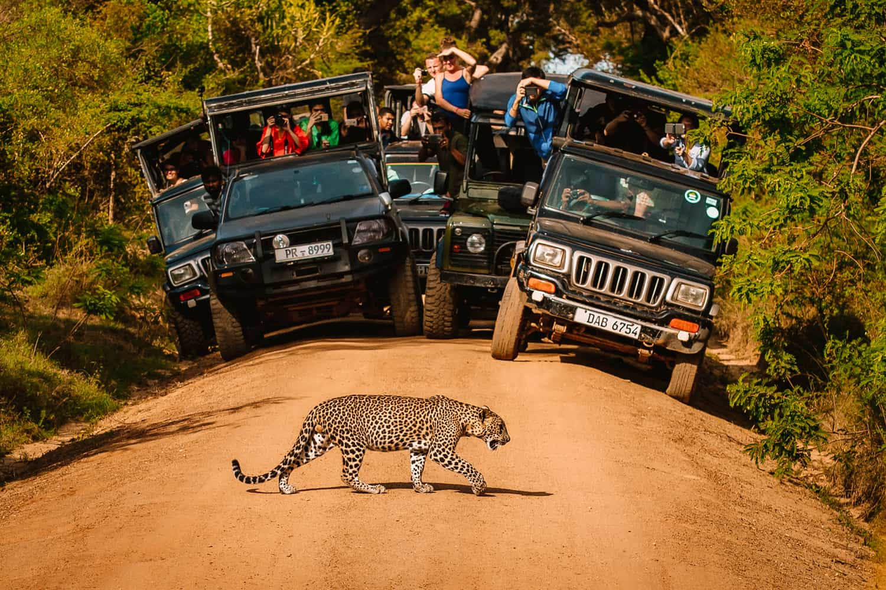
Yala National Park is the most visited and second largest national park in Sri Lanka, bordering the Indian Ocean. The park consists of five blocks, two of which are now open to the public, and also adjoining parks. The blocks have individual names such as Ruhuna National Park (Block 1), and Kumana National Park or 'Yala East' for the adjoining area. It is situated in the southeast region of the country and lies in Southern Province and Uva Province. The park covers 979 square kilometers (378 sq mi) and is located about 300 kilometers (190 mi) from Colombo.
Day 04 – Ella Highlights
Headed into the hill country to the charming village of Ella, known for its stunning views and iconic architecture.
Ella & Nine Arch Bridge
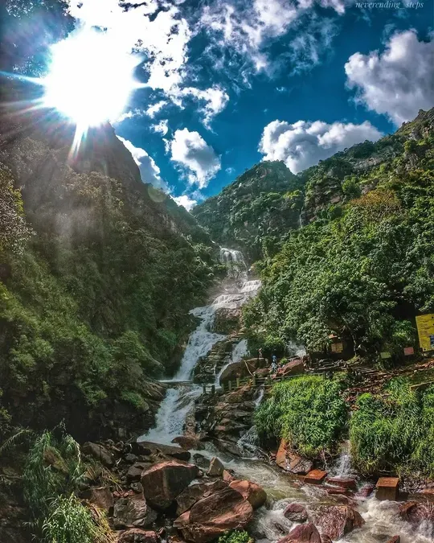
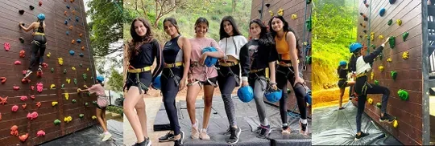
Ella The next day after breakfast, proceed to Ella. From Ella to Nuwara Eliya destination, you can get an amazing experience from Ella to Nanu Oya Train Visit. Ella is a small town in the Badulla District of Uva Province, Sri Lanka governed by an Urban Council. It is approximately 200 kilometres east of Colombo and is situated at an elevation of 1,041 metres above sea level. The area has a rich bio-diversity, dense with numerous varieties of flora and fauna.
Day 05 – Nuwara Eliya
Take the scenic drive to Nuwara Eliya, the "Little England" of Sri Lanka, passing through endless tea plantations.
Nuwara Eliya Tea Trails
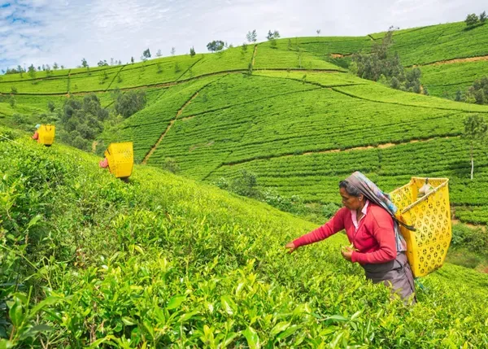
Nuwara Eliya The next day after breakfast, proceed to Nuwara Eliya. Nuwara Eliya meaning "city on the plain or "city of light" is a town in the central highlands of Sri Lanka. It is one of the major tea-producing areas in the world. The tallest mountain in Sri Lanka "Pidurutalagala" oversees this beautiful city. It is the most visited hill country.
Day 06 – Kandy
Visit the cultural capital of Sri Lanka, Kandy, home to the sacred Temple of the Tooth Relic.
Temple of the Tooth Relic

Kandy is a major city in Sri Lanka located in the Central Province. It was the last capital of the ancient kings' era of Sri Lanka. The city lies in the midst of hills in the Kandy plateau, which crosses an area of tropical plantations, mainly tea. Kandy is both an administrative and religious city and is also the capital of the Central Province. Kandy is the home of the Temple of the Tooth Relic (Sri Dalada Maligawa), one of the most sacred places of worship in the Buddhist world. It was declared a world heritage site by UNESCO in 1988. Historically the local Buddhist rulers resisted Portuguese, Dutch, and British colonial expansion and occupation.
Day 07 – Sigiriya
Descend from the hills towards the cultural triangle to visit the majestic Sigiriya Rock Fortress.
Sigiriya Rock Fortress
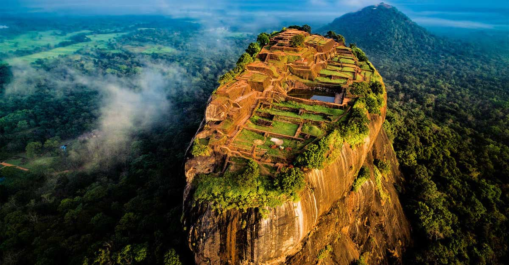
Sigiriya or Sinhagiri is an ancient rock fortress located in the northern Matale District near the town of Dambulla in the Central Province, Sri Lanka. It is a site of historical and archaeological significance that is dominated by a massive column of rock approximately 180 m (590 ft) high. According to the ancient Sri Lankan chronicle the Cūḷavaṃsa, this area was a large forest, then after storms and landslides, it became a hill and was selected by King Kashyapa (AD 477–495) for his new capital. He built his palace on top of this rock and decorated its sides with colorful frescoes. On a small plateau about halfway up the side of this rock, he built a gateway in the form of an enormous lion. The capital and the royal palace were abandoned after the king's death. It was used as a Buddhist monastery until the 14th century. Sigiriya today is a UNESCO-listed World Heritage Site. It is one of the best-preserved examples of ancient urban planning.
Day 08 – Negombo – Airport
Finally, travel to the coastal town of Negombo before heading to the airport for your departure.
Negombo & Departure
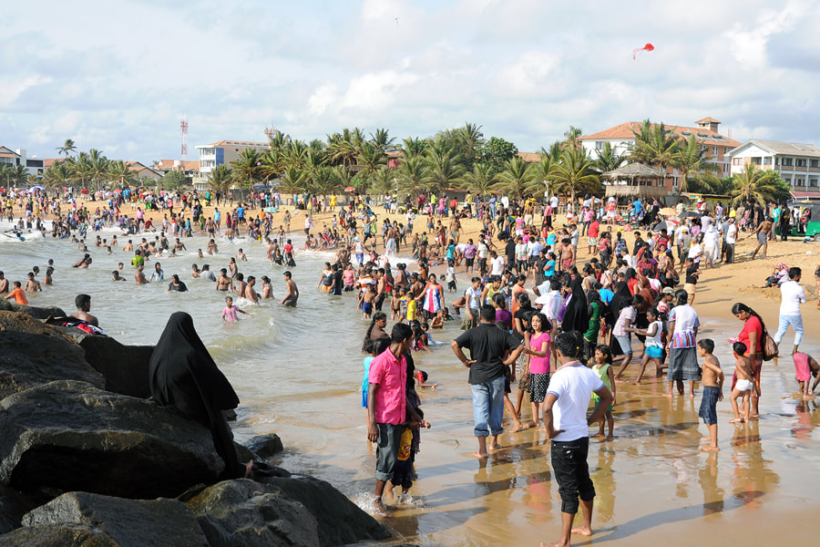
Negombo Sri Lanka (Sinhala: මීගමුව; Tamil: நீர்கොழும்பு) is a bustling city close to the Bandaranaike International Airport; and second largest city in the Western province, after Colombo. Located at the lagoon-mouth, Negombo is a major tourist destination with an old, large, and thriving fishing industry. The beach here is quiet and peaceful, and the sight of the fisher folk out at sea on their oruwas (outrigger canoes) is a particularly charming sight. A boat trip winding through the lush mangroves down the Dutch Canal or Muthurajawela Marsh will reward you with sightings of monitor lizards and flocks of migrant birds. Depending on your flight time, you will then be taken to the Airport for your upcoming flight. Hoping you have enjoyed your trip!
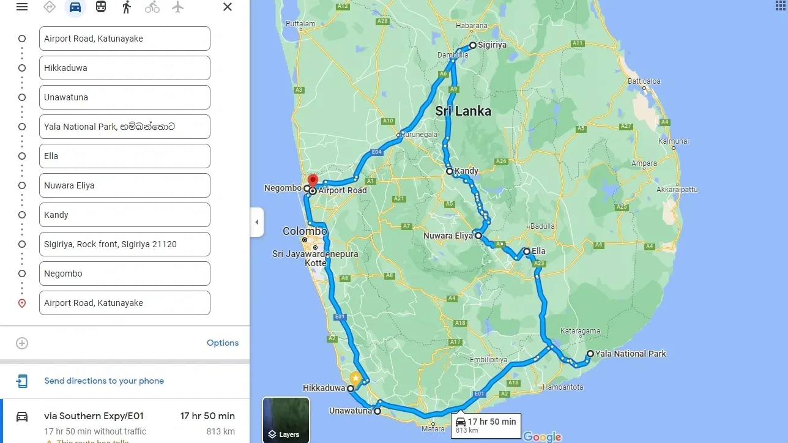
Map of the whole trip